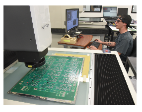
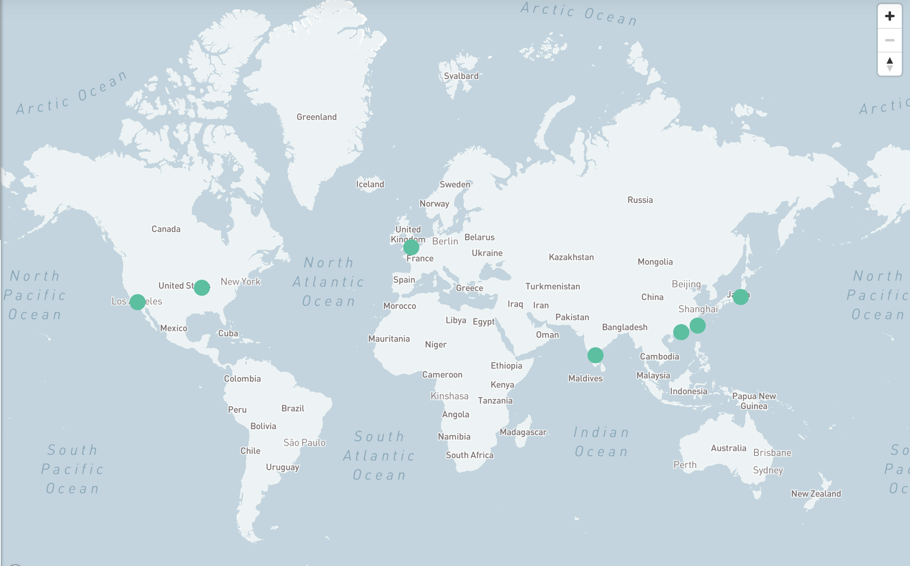

Computer Engineering Student | Automation Intern
Lessons from my internship experience at a leading PCB manufacturer
This portfolio demonstrates key communication strategies I learned during my internship at TTM Technologies, a global PCB manufacturer serving clients like Apple, Cisco, and Lockheed Martin. During my 10-month internship as an automation engineer, I spent a lot of time on the internal manufacturing and engineering teams, working through industrial data collection and analysis.
TTM stands for "time-to-market," reflecting their commitment to rapid product development. Their mission is to provide "market leading, differentiated solutions and an extraordinary customer experience" - a standard that I can say extends to internal communication practices as well.
My research revealed that good engineering communication at TTM is a process shaped by the audience, purpose, and the chosen medium. While being technically knowledgeable is important, it's possibly more important to know how to manage personal relationships and cultural variation across global locations.
A crucial issue that I observed in my research was the need for transparency regarding production challenges or quality issues. Engineers must communicate accurately and promptly with many audiences (managers, clients, colleagues) to upholding the company's commitment to quality and customer experience. On a global scale, communication requires sensitivity to time zones, language barriers, and varying cultural norms around timing and formality, impacting everything from meeting schedules to email tone.
Understanidng the levels of communication within the company involved informal mediums (like face-to-face interactions and SMS messaging) alongside formal ones (email, documentation systems). It means recognizing that effective communication isn't just about delivering information, but also how you deliver it, to help build team trust and meet goals quicker.
This understanding is paramount for anyone entering or participating in the engineering field for several key reasons:
The following sections delve into specific instructional moments and best practices identified during my research, offering practical guidance on applying the Purpose-Audience-Medium framework, selecting the right communication channels, and effectively translating technical information for non technical audiences.
Based on my research findings, I recommend that aspiring engineers take the following actions: